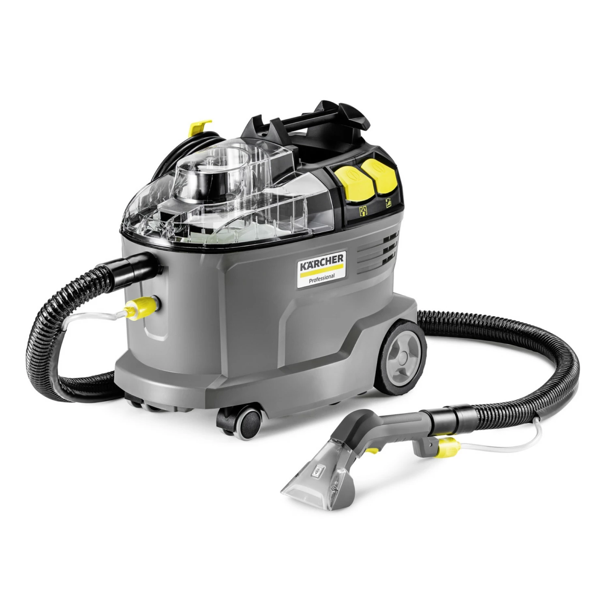
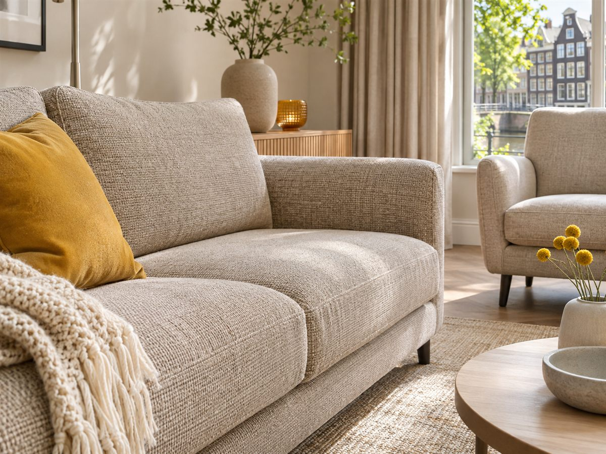
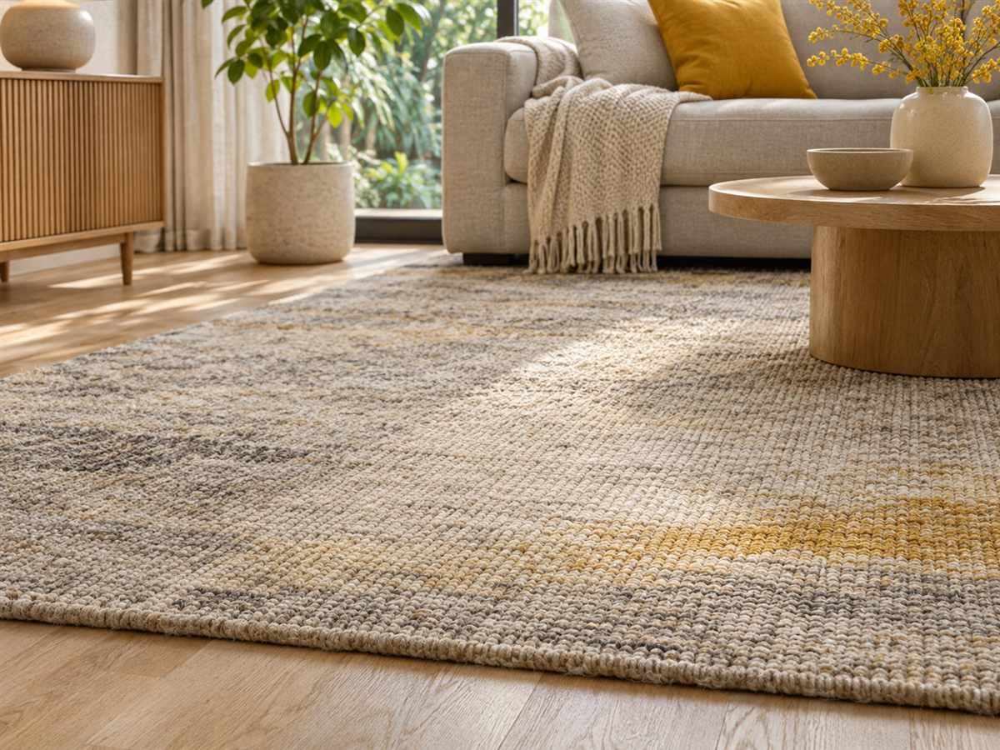
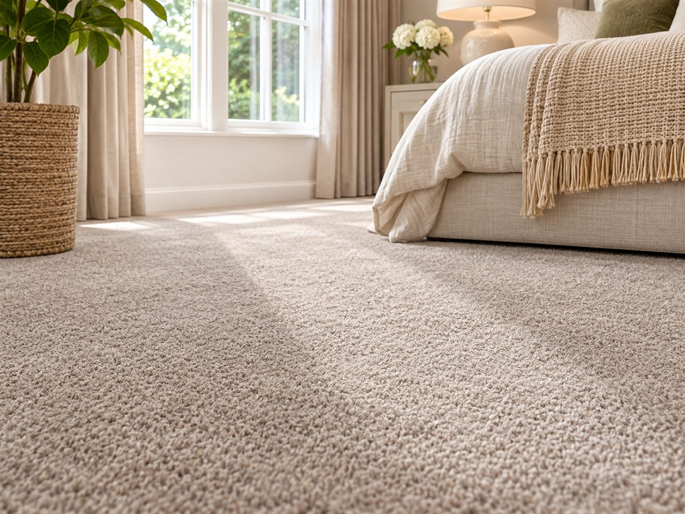
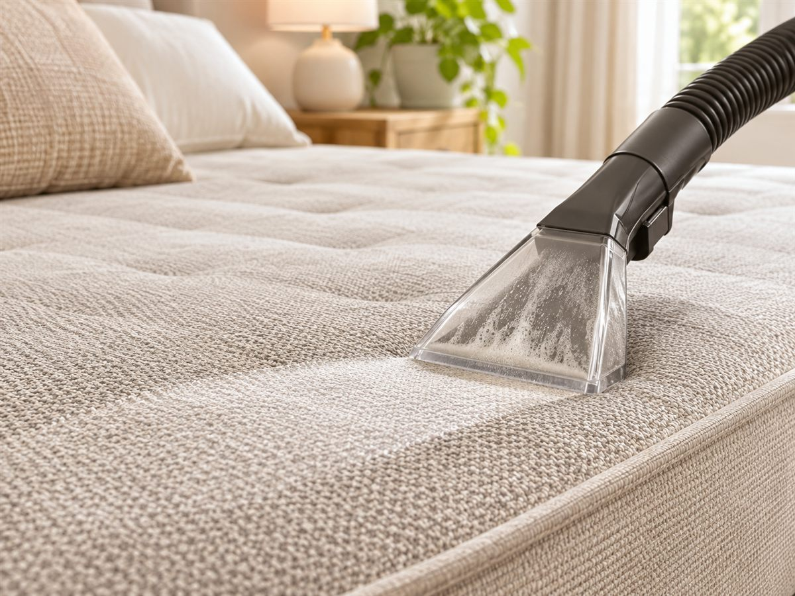

Ook ’s avonds bezorgd
Overdag aan het werk? Geen probleem. We spreken samen een bezorgmoment af, ook in de avonduren.
Professioneel reinigen, eenvoudig huren
Geef je bank, vloerkleed of stoelen een grondige opfrisbeurt. Ik bezorg de professionele Kärcher tapijtreiniger bij je thuis en geef je duidelijke uitleg.

Aanvraag in een paar stappen
Kies je periode, datum en eventuele extra producten. Ik controleer de beschikbaarheid en bevestig je aanvraag persoonlijk via WhatsApp.
Van handige bezorgtijd tot persoonlijk advies: ik zorg ervoor dat je zonder zorgen aan de slag kunt met een schoon resultaat.
Overdag aan het werk? Geen probleem. We spreken samen een bezorgmoment af, ook in de avonduren.
Heb je vragen? Je kunt eenvoudig advies krijgen via WhatsApp of persoonlijk tijdens de bezorging. Ik help je graag op weg.
Ik bezorg de Kärcher Puzzi 8/1 zelf bij je thuis en geef hem persoonlijk aan je over.
Je betaalt geen borg bij het huren van de tapijtreiniger. Zo weet je vooraf waar je aan toe bent.
Maak je huur compleet met de juiste reinigingstabletten en impregneerspray voor goede nazorg van je meubels. Beide zijn optioneel bij te bestellen.
Kies wat bij je past
Reserveer de periode die past bij jouw schoonmaakklus.
Voor een gerichte klus
€ 40,-
Perfect voor een gerichte schoonmaakklus. Huur de Kärcher reiniger voor een dag en geef jouw meubels, tapijt of bekleding een grondige reinigingsbeurt.
Reserveer dagverhuurMeer tijd, voordelig geregeld
€ 70,-
Van vrijdagavond tot maandagavond
Neem lekker de tijd voor je schoonmaakklus. Met de weekenddeal heb je de hele zaterdag en zondag de beschikking over de reiniger, zonder dat je je hoeft te haasten.
Reserveer weekenddealDe genoemde huurprijzen zijn exclusief eventuele reinigingstabletten en impregneerspray. Deze producten zijn optioneel bij te bestellen.
Een vertrouwd gezicht
Hoi! Ik ben Rik, het gezicht achter karchertapijtreinigerhuren.nl.
Ik vind dat het huren van een professionele tapijtreiniger eenvoudig en toegankelijk moet zijn. Daarom houd ik het graag persoonlijk.
Van het eerste contact en het reserveren tot het bezorgen en ophalen van de Kärcher Puzzi 8/1: ik regel het zelf.
Zo weet je precies bij wie je terechtkunt en kun je met een gerust gevoel aan de slag met het reinigen van je meubels.
Professioneel reinigen, eenvoudig huren
Een krachtige, compacte reiniger voor een grondige opfrisbeurt van meubels en textiel in huis of auto.
De Kärcher Puzzi 8/1 is een professionele sproei-extractiereiniger. De machine sproeit water met reinigingsmiddel diep in de vezels van tapijt of bekleding en zuigt het vuile water daarna weer op. Zo pak je vuil, vlekken en nare geurtjes effectief aan.
De Puzzi is geschikt voor banken, stoelen, matrassen, tapijten, vloerkleden en autobekleding. Dankzij het compacte ontwerp is hij relatief eenvoudig te bedienen. De krachtige zuigwerking neemt veel vocht direct weer op, zodat het gereinigde oppervlak relatief snel droogt.
Reserveer de PuzziVoor meubels en textiel
Geef meubels en bekleding thuis een grondige schoonmaakbeurt met de Kärcher Puzzi 8/1.






Controleer bij matrassen altijd of het materiaal geschikt is voor natte extractiereiniging.
Ik bezorg de reiniger persoonlijk bij je thuis.
Bekijk de verhuurprijzenReinigingsoplossing wordt ingebracht en samen met losgekomen vuil opgezogen.
Geschikt voor meubels, matrassen, tapijt, vloerkleden en autobekleding.
De krachtige zuigwerking helpt de droogtijd na het reinigen te beperken.
Goed om te weten
Staat jouw vraag er niet bij? Stuur mij gerust een bericht.
Dagverhuur kost € 40,- per dag. De weekenddeal kost € 70,- van vrijdagavond tot maandagavond. In de reserveringsmodule zie je direct de indicatieve prijs voor je datums en eventuele accessoires.
Reinigingstabletten zijn optioneel bij te bestellen: € 5,- per verpakking van 3 stuks. Impregneerspray voor meubels kost € 21,50 per stuk.
Ja, we spreken samen een bezorgmoment af. De weekenddeal loopt van vrijdagavond tot maandagavond.
Je kunt onder andere banken, fauteuils, eetkamerstoelen, vloerkleden, tapijt, matrassen en autobekleding reinigen. Controleer het onderhoudslabel en test eerst op een onopvallende plek.
Vul de reserveringsmodule in en verstuur je aanvraag via WhatsApp. Je aanvraag is nog geen definitieve reservering; ik bevestig zelf de beschikbaarheid en afspraken.
Nee, je betaalt geen borg.
Ik bezorg de Puzzi persoonlijk bij je thuis, geef uitleg en haal de machine na afloop van de afgesproken periode weer op.
Klaar om te beginnen?
Vragen over huren of het juiste reinigingsmiddel? Stuur mij gerust een WhatsApp.
Reserveer nuPersoonlijk contact, snel geregeld.
Ik bevestig je aanvraag en beschikbaarheid persoonlijk via WhatsApp.